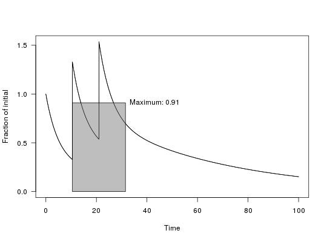
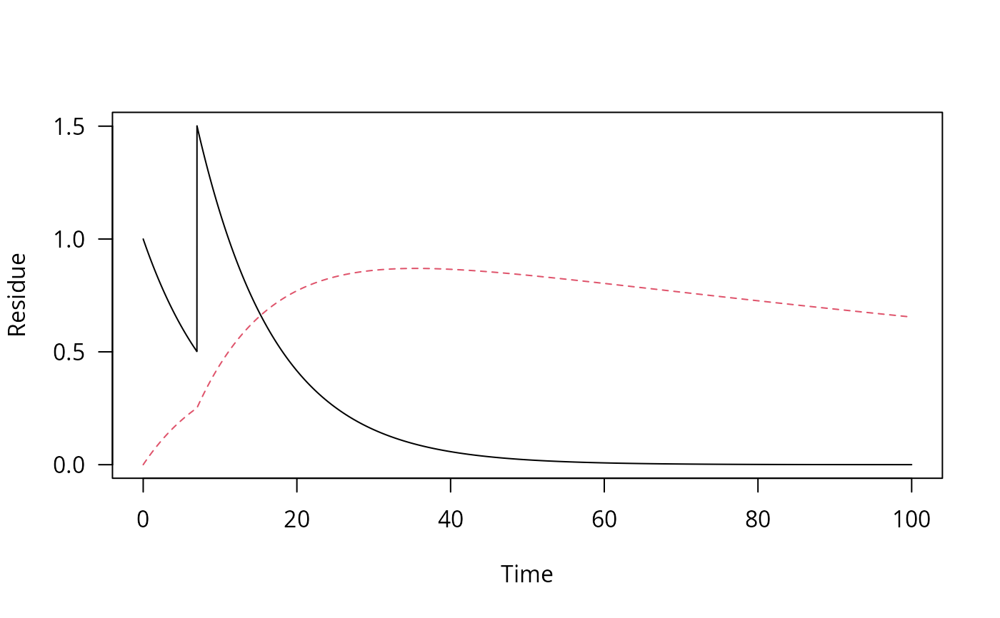
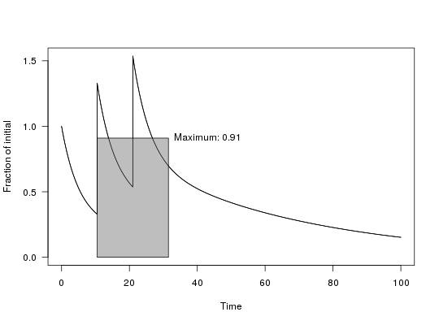
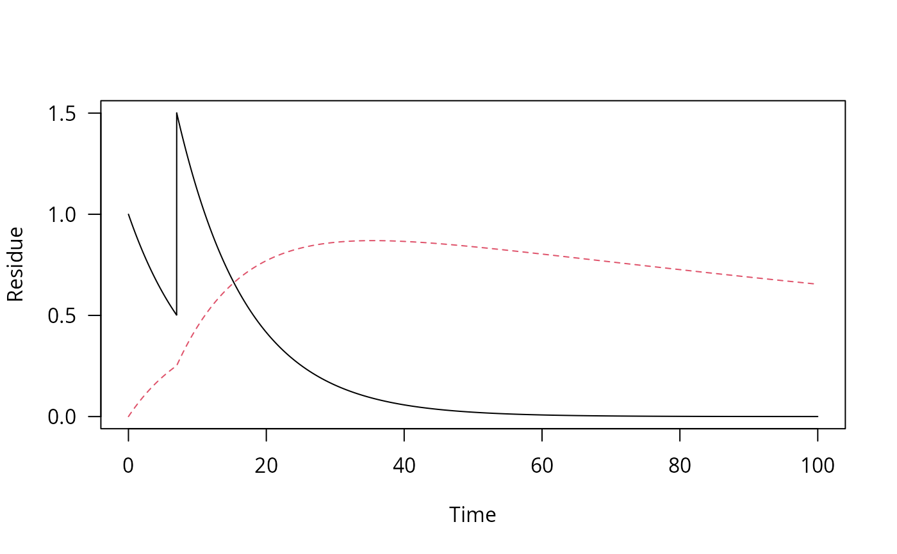

Plot time series of decline data
Arguments
- x
The object of type
one_boxto be plotted- xlim
Limits for the x axis
- ylim
Limits for the y axis
- xlab
Label for the x axis
- ylab
Label for the y axis
- max_twa
If a numeric value is given, the maximum time weighted average concentration(s) is/are shown in the graph.
- max_twa_var
Variable for which the maximum time weighted average should be shown if max_twa is not NULL.
- ...
Further arguments passed to methods
Examples
dfop_pred <- one_box("DFOP", parms = c(k1 = 0.2, k2 = 0.02, g = 0.7))
plot(dfop_pred)
 plot(sawtooth(dfop_pred, 3, 7), max_twa = 21)
plot(sawtooth(dfop_pred, 3, 7), max_twa = 21)

 # Use a fitted mkinfit model
m_2 <- mkinmod(parent = mkinsub("SFO", "m1"), m1 = mkinsub("SFO"))
#> Temporary DLL for differentials generated and loaded
fit_2 <- mkinfit(m_2, FOCUS_2006_D, quiet = TRUE)
#> Warning: Observations with value of zero were removed from the data
pred_2 <- one_box(fit_2, ini = 1)
pred_2_saw <- sawtooth(pred_2, 2, 7)
plot(pred_2_saw)
plot(pred_2_saw, max_twa = 21, max_twa_var = "m1")


# Use a fitted mkinfit model
m_2 <- mkinmod(parent = mkinsub("SFO", "m1"), m1 = mkinsub("SFO"))
#> Temporary DLL for differentials generated and loaded
fit_2 <- mkinfit(m_2, FOCUS_2006_D, quiet = TRUE)
#> Warning: Observations with value of zero were removed from the data
pred_2 <- one_box(fit_2, ini = 1)
pred_2_saw <- sawtooth(pred_2, 2, 7)
plot(pred_2_saw)
plot(pred_2_saw, max_twa = 21, max_twa_var = "m1")

